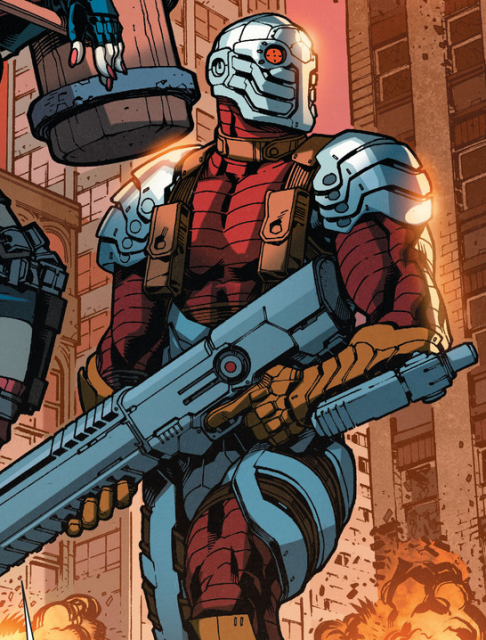

|  | BIOGRAFIA |
|---|---|
|
Pistoleiro, nome real Floyd Lawton, é um dos maiores assassinos de aluguel do mundo e um dos melhores atiradores
do universo DC. Ele é conhecido por nunca errar um tiro e por aceitar qualquer missão
se o pagamento for alto. Apesar de agir como alguém frio e sem emoções, Floyd tem um ponto fraco:
sua filha, e muitas de suas ações são motivadas pela tentativa de dar a ela uma vida melhor, longe do crime.
Frequentemente é recrutado pelo Esquadrão Suicida, onde cumpre missões mortais em troca de redução de pena. | |
| ARMAS | |
|
Braceletes Armados: Armas acopladas nos braços. Permitem disparos rápidos e precisos. Pistolas de Alta Precisão: Usa diferentes armas de fogo com perfeição absoluta. Refletem seu talento natural como atirador. Visor de Mira Eletrônica: Dispositivo no olho para aumentar precisão. Símbolo de seu foco e letalidade. | |
| Habilidades | |
|
Mira Perfeita: Capaz de acertar tiros impossíveis. Combate Militar: Habilidade em armas, táticas e luta corporal. Autocontrole Frio Toma decisões rápidas e eficientes. |